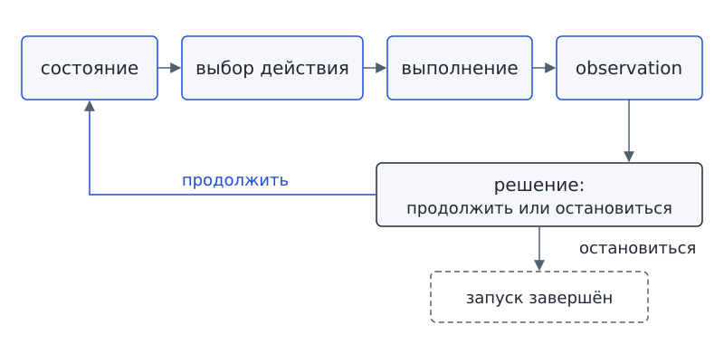
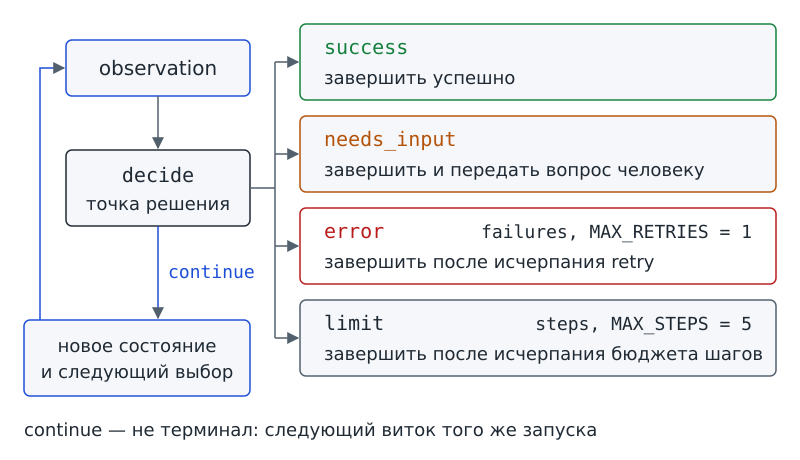

Глава 2. Агентный цикл: как результат действия меняет следующий шаг?¶
Две карточки с одним номером¶
В главе 1 мы научились отличать фразу «карточки прочитаны» от настоящего чтения. Теперь «Дежурный», программа-помощник проектного бюро, умеет по-настоящему читать доску задач — папку с карточками. Кажется, достаточно прочитать карточки и составить ответ. Но уже на второй день чтение вернуло результат, которого Аня не ожидала.
Марк из лабораторной группы разделил задачу про оборудование на две: одну для зала, другую для стендов. В спешке он создал вторую карточку с номером, почти совпадающим с прежним: task-003-copy. Аня о новой карточке не знала. Вечером она спросила «Дежурного», что там с оборудованием.
Сравним два результата одного и того же действия — чтения карточек. В первый день среда вернула одно совпадение. Ответ записан в знакомом по главе 1 формате JSON: имена полей связаны со значениями. Поле ok сообщает, удалось ли чтение; true означает «да», false — «нет». В поле matches находится список найденных совпадений: номера записаны в квадратных скобках. Такой результат действия, вернувшийся системе, мы называем observation (наблюдением):
{"ok": true, "matches": ["task-003"]}
Во второй день среда вернула уже два совпадения:
{"ok": true, "matches": ["task-003", "task-003-copy"]}
Действие одно и то же, а результаты разные. Можно ли после обоих результатов сделать один и тот же следующий шаг? Нет. В первом случае задача найдена, и можно готовить сводку. Во втором случае непонятно, о какой из двух карточек спрашивала Аня. Помощнику нужно переспросить, а не выбирать карточку наугад.
Значит, следующий шаг зависит не от того, что мы собирались сделать, а от того, что получилось. Как именно результат действия определяет следующий шаг, мы и разберём в этой главе.
Главный вопрос главы. Как система превращает результат действия в решение — продолжить работу или остановиться?
Вопрос-Прогноз. Чтение дважды подряд не удалось. Что нужно сохранить после первой попытки, чтобы после второй программа могла обоснованно остановиться? Запиши версию и вернись к ней после запуска с ошибкой.
После главы ты сможешь¶
- восстановить четыре стадии работы и показать, где после них принимается решение;
- различать tool, выполненное действие и полученное observation и показать их в коде;
- объяснить, какие данные текущего запуска сохраняет программа и как она использует последний результат;
- различать продолжение работы и четыре способа завершить запуск;
- объяснять, когда можно попробовать ещё раз и когда нужно остановиться;
- читать и запускать полный учебный файл, напечатанный в практике B;
- проверять успешный, неоднозначный, ошибочный и граничный маршруты.
Урок 3. Один шаг и обратная связь¶
1. От последовательности к циклу¶
Вспомни программу Ани из главы 1 — систему B. Разработчик заранее задал её маршрут. Ниже показан ещё один пример последовательности с заранее заданным порядком действий:
прочитать → посчитать → напечатать
На короткой схеме не видно, что делать при двух совпадениях или ошибке чтения. Если разработчик не предусмотрел проверки результатов, программа может продолжить работу по неверному предположению. При этом обычный код тоже умеет проверять результаты и выбирать ветви. Само наличие проверки ещё не делает систему агентом.
Что нужно программе, чтобы следующий шаг опирался на результат предыдущего? Результат выполненного действия должен вернуться в программу и повлиять на дальнейшую работу. Так действует обратная связь по результату внутри одного запуска. Программа повторно выбирает действие, уже располагая новыми сведениями: последовательность замыкается в цикл. На экскурсии ты видел такой цикл, когда агент шаг за шагом составлял оглавление. Теперь разберём стадии цикла. (Слово «обратная связь» встретится ещё раз в главе 13 в другом значении — как замечание людей или проверок о самой процедуре; там оно станет термином Feedback.)
Представь, что Аня отмечает неудачные попытки чтения на листке, но после каждой попытки стирает запись. По пустому листку нельзя отличить первый отказ от второго. Для решения об остановке нужно сохранить сведения о предыдущих попытках. Это сравнение касается только учёта попыток: программа хранит сведения в своих данных, а не на бумаге.
Чтобы сделать следующий шаг, программе нужны сведения о том, что уже произошло: сколько попыток выполнено и что вернула последняя попытка. Это состояние запуска — данные текущего запуска, с которыми программа продолжает работу. Отдельный момент проверки этих данных после результата назовём точкой решения. В точке решения программа определяет, продолжать или остановиться; ещё одно чтение для такой проверки не требуется.
Агентный цикл (agent loop) связывает четыре стадии: состояние, выбор действия, выполнение и observation; после них в том же шаге принимается решение о продолжении или остановке. Результат не теряется после вывода на экран: программа учитывает полученные сведения при следующем шаге. Но повторение команд само по себе ещё не доказывает, что модель участвует в выборе. В этой главе место модели занимает заглушка. Ниже показана минимальная схема цикла; мы будем возвращаться к ней на протяжении всей главы:
состояние → выбор действия → выполнение → observation
↓
решение: продолжить или остановиться
Схема показывает четыре стадии и отдельную точку решения после observation; дальше каждая из них станет строками кода. В списке ниже первые четыре пункта описывают стадии, а пятый описывает проверку, которая следует за получением результата:
- Состояние хранит всё, что известно о текущем запуске: сколько шагов сделано, чем закончился последний шаг, не пора ли останавливаться.
- Выбор действия задаёт один следующий шаг — например, «прочитать карточки».
- Выполнение действительно запускает разрешённую операцию в среде.
- observation — результат, который вернула среда: данные или сообщение о сбое.
- Решение — точка, где по observation и состоянию определяется, продолжать или завершить запуск.
При решении continue («продолжить») обновлённое состояние снова поступает на стадию выбора. Начинается новый проход цикла. При решении завершить работу текущий запуск заканчивается.

Фигура 4. Четыре стадии и точка решения
2. Tool, действие и observation¶
В главе 1 слова tool, действие и observation появились почти вместе. В цикле нужно различать доступную операцию, её выполнение и полученный результат. Проследим переход от одного к другому на примере чтения карточек.
read_task_cards — операция, которую система умеет выполнять, то есть tool (инструмент). Одного наличия операции в списке доступных возможностей недостаточно: чтение ещё не началось.
Когда система на конкретном шаге выбирает операцию и выполняет её, происходит действие. Одному действию соответствует один вызов.
После выполнения среда возвращает observation (наблюдение): результат действия или сообщение о сбое, возвращённое в рабочий цикл.
Просьба «прочитай карточки» ещё не подтверждает ни доступность операции, ни её выполнение, ни получение данных. Чтобы проверить весь путь от выбора до результата, нужно различить три события:
выбрано read_task_cards
→ приложение выполнило read_task_cards
→ среда вернула observation
Решение опирается на observation вместе со счётчиками и условиями продолжения работы; одного намерения выполнить действие недостаточно. Это главная мысль главы.
Объясни своими словами, какие данные нужны для решения о следующем шаге, прежде чем читать дальше.
3. Состояние в программе¶
Где программа хранит сведения о запуске? В нашем примере для этого используется словарь Python — набор именованных полей. Каждому имени соответствует значение, которое можно прочитать или изменить. Словарь похож на карточку самого запуска, только хранится в работающей программе. Словарь Python и JSON-запись похожи внешне, но словарь содержит данные программы, а JSON служит текстовым форматом для передачи или хранения данных.
Перед чтением блока разберём три обозначения:
Falseозначает «нет»: в полеdoneэто значит, что запуск ещё не закончен.Noneозначает отсутствие значения: в полеterminalэто значит, что причина завершения пока не выбрана.phaseобозначает этап, а значениеstartуказывает, что работа только начинается.
В начале работы состояние выглядит так:
# пример
{
"phase": "start",
"steps": 0,
"failures": 0,
"done": False,
"terminal": None,
"max_steps": 5,
"max_retries": 1
}
В словаре записаны сведения о ходе работы и её ограничениях:
stepsхранит число выполненных действий.failuresхранит число действий, которые закончились отказом.doneпоказывает, завершён ли запуск.terminalуказывает, чем завершился запуск; в начальном состоянии результат ещё не выбран.max_stepsиmax_retriesзадают допустимое число действий и повторов. Эти настройки подробнее проверим на уроке 4.
Поле phase обозначает только этап работы. После выполненного действия поле получает значение observed: «observation уже записано, можно принимать решение». Одной отметки этапа недостаточно для описания всего состояния: в словаре также есть счётчики, пределы и последний результат.
Показанный словарь иллюстрирует основные поля состояния. Фактическая функция new_state добавляет ещё поле scenario с именем сценария. Имя нужно только среде, чтобы подготовить observation для опыта; функция решения имя сценария не читает. Зачем разделять подготовку результата и принятие решения, проверим на уроке 4.
В полном листинге ты встретишь обозначения результатов работы. Завершающий результат называется терминалом. В демо предусмотрены четыре терминала:
successозначает, что цель достигнута.needs_inputозначает, что нужны новые сведения.errorозначает, что после сбоя продолжать нельзя.limitозначает, что предел действий исчерпан.
Решение continue разрешает продолжить текущий запуск, поэтому к терминалам не относится. Повторная попытка после сбоя называется retry (повтор); разрешённое число действий ограничивает limit (предел). В нашем опыте разрешены пять действий и один повтор. Точные условия выбора результата мы проверим на уроке 4.
4. Практика A: сыграй один проход¶
Вместе с четырьмя одноклассниками распредели пять ролей, по одной на человека:
- хранитель состояния;
- выбирающий действие;
- исполнитель;
- среда, выдающая observation;
- проверяющий решение.
В начале игры используй состояние: «нужно определить заблокированную задачу; карточки не прочитаны». Участник, выбирающий действие, предлагает read_task_cards, а исполнитель передаёт операцию среде.
В раунде 1 среда возвращает одно совпадение — task-003. В раунде 2 среда возвращает два совпадения — task-003 и task-003-copy. После каждого observation хранитель вслух обновляет состояние. Проверяющий называет решение и объясняет, на каких данных основан выбор.
Результат: запиши две цепочки с одинаковым действием и разными решениями. Закончи фразу: «Решение изменилось, потому что observation показало…»
5. Практика B: полный loop_demo.py¶
Теперь проследим цикл в коде. В корне starter, то есть в самой папке учебного комплекта, находится файл loop_demo.py. Как выбрать рабочую папку в терминале, смотри во врезке «Как устроен наш практикум» главы 1. Ниже напечатан весь файл.
Подготовка сценариев и вывод на экран вынесены в отдельный модуль — файл с используемыми функциями: school_agent/lesson_support.py. Запись from ... import ... указывает, откуда программа получает функции; точка в имени модуля показывает его расположение внутри набора файлов.
Функция perform_action из этого модуля возвращает в наших опытах заранее подготовленные observation. Карточки с диска здесь заново не читаются. Мы проверяем, как программа управляет работой по полученному результату, а не качество выбора живой модели или реальный поиск по папке.
# файл: loop_demo.py
"""Глава 2. Шаг = действие; решение принимается после observation."""
from school_agent.lesson_support import perform_action, new_state, show_loop
MAX_STEPS = 5
MAX_RETRIES = 1
def planner_stub(state):
return {"name": "read_task_cards"}
def update_state(state, observation):
state["observation"] = observation
state["steps"] += 1
if not observation["ok"]:
state["failures"] += 1
state["phase"] = "observed"
def decide(state):
observation = state["observation"]
if not observation["ok"]:
if state["failures"] > state["max_retries"]:
return "error"
else:
if observation.get("search_complete", True):
matches = observation["matches"]
if len(matches) == 1:
return "success"
return "needs_input"
if state["steps"] >= state["max_steps"]:
return "limit"
return "continue"
def run_loop(scenario="one_match", max_steps=MAX_STEPS, max_retries=MAX_RETRIES):
state = new_state(scenario, max_steps, max_retries)
events = []
while not state["done"]:
action = planner_stub(state)
observation = perform_action(action, state)
update_state(state, observation)
decision = decide(state)
events.append({
"step": state["steps"], "state": state["phase"], "action": action,
"observation": observation, "decision": decision,
})
state["done"] = decision != "continue"
if state["done"]:
state["terminal"] = decision
return {"terminal": state["terminal"], "state": state, "events": events}
if __name__ == "__main__":
show_loop(run_loop)
В файле определены четыре небольшие функции. Внутри run_loop работает цикл while: команды повторяются, пока выполняется условие. Выражение not state["done"] читается как «запуск ещё не завершён». Квадратные скобки после state позволяют получить значение по имени поля. Запись += 1 увеличивает счётчик на единицу, а != проверяет, что значения различны.
В функции decide вызов len считает элементы списка совпадений. Вызов .get("search_complete", True) читает признак завершённого поиска; если поле не передано, признак считается истинным. Запись events.append(...) добавляет сведения о шаге в список результатов запуска.
Переписывать полный файл по памяти не требуется. Найди в листинге четыре стадии и точку решения со схемы: внутри run_loop порядок сохранён. Проследи один проход по строкам:
planner_stub(state)выбирает действие. Заглушка всегда предлагаетread_task_cards. Позже с этим местом программы будет связан выбор живой модели. Для подключения модели потребуется подготовить вход и проверить ответ; заменить имя функции недостаточно.perform_action(action, state)выполняет действие в среде и возвращает observation.update_stateзаписывает observation в состояние и увеличивает число выполненных действий. Отказ тоже считается выполненной попыткой: действие было, хотя операция завершилась сбоем.decide(state)вызывается после получения и записи observation, в том же проходе цикла. Функция читает из состояния только последнее observation, счётчики и пределы.- Только решение
continueоставляетdoneравнымFalseи разрешает новый проход. Любое другое решение записывается вterminal, и цикл заканчивается.
Следи отдельно за повторением цикла и за проверкой предела. Условие while not state["done"] само не считает шаги. Общий предел проверяет только decide: функция сначала оценивает observation и лишь затем, если работа допускает продолжение, сравнивает steps с max_steps. При допустимых настройках этого демо успех на пятом шаге остаётся успехом, но шестое действие уже не выполняется. К этому различию мы вернёмся на уроке 4.
6. Два запуска¶
До запуска запиши прогноз: какие пять строк напечатает программа для сценария с одним совпадением? Затем выполни команду из корня starter:
# запуск из корня starter
python loop_demo.py --scenario one_match
step: 1
state: observed
action: read_task_cards
observation: {"ok": true, "matches": ["task-003"]}
decision: success
Пять строк описывают один проход цикла. В выводе указаны:
- Номер шага.
- Отметка
phase. - Выбранное действие.
- Результат, который вернула среда.
- Решение функции
decide.
Теперь измени только сценарий. Код программы останется прежним, а подготовленное observation изменится. До запуска предскажи, какое поле результата заставит программу остановиться без выбора одной карточки:
# запуск из корня starter
python loop_demo.py --scenario two_matches
step: 1
state: observed
action: read_task_cards
observation: {"ok": true, "matches": ["task-003", "task-003-copy"]}
decision: needs_input
В обоих запусках выполнено действие read_task_cards на шаге 1, но решения различаются. Два совпадения привели к needs_input: нужно уточнение. Система завершает запуск с сообщением о нехватке сведений. Ни молчаливого выбора карточки, ни уже проведённого разговора с человеком за этой меткой нет.
Обычная программа тоже может завершить работу таким образом, если разработчик предусмотрел нужную проверку. В нашем опыте проверку выполняет decide; участие модели здесь не имитируется.
Разбери observation по полям¶
Почему observation содержит поля, а не одну фразу? Поля позволяют связать решение с конкретными данными, а не с впечатлением от уверенного текста. Посмотрим на первый результат:
{"ok": true, "matches": ["task-003"]}
Легко принять ok: true за сообщение об успехе всей задачи. Но поле подтверждает только то, что операция чтения выполнилась без сбоя. Для проверки цели нужно ещё прочитать matches: в поле перечислены найденные совпадения. Наше демо считает цель достигнутой, когда в завершённом поиске найдено ровно одно совпадение.
{"ok": true, "matches": ["task-003", "task-003-copy"]}
Во втором результате тоже стоит ok: true, но найдены две карточки. Операция выполнена без сбоя, а выбрать карточку для ответа нельзя. Поэтому ok: true сообщает об операции tool, а success сообщает о достижении цели запуска. Успешное выполнение операции ещё не означает достижения цели.
При сбое структура другая:
{"ok": false, "error": "Ошибка: учебные карточки недоступны"}
В результате сбоя нет поля matches. Программа сначала обрабатывает ok: false, поэтому к отсутствующему списку совпадений обращаться не нужно. Функция update_state увеличит failures, а decide сравнит число отказов с разрешённым числом повторов. Решение опирается на полученные данные, а не на имя сценария.
Почему решение находится внутри того же шага¶
Нужно ли ещё одно действие, чтобы решить, продолжать работу или нет? Нет: после возвращения observation уже известно, чем закончилось выполненное действие. В этот момент шаг считается выполненным и можно сразу принять решение.
Если отложить решение «на следующий шаг» и посчитать проверку отдельным действием, запись окажется неверной. После второго отказа программа будто бы выполнит действие 3 «решить error», хотя разрешённый повтор уже исчерпан на действии 2. Проверка не должна добавлять фиктивную попытку.
Сравни две записи:
неверно: действие 2 → второй отказ → действие 3 «решить error»
верно: действие 2 → второй отказ → решение error в действии 2
Решение управляет продолжением работы и не выполняет внешнюю операцию. Поэтому принятие решения не увеличивает steps.
Выходной билет урока 3¶
Восстанови без подсказки:
________ → ________ → ________ → ________ → точка решения
Затем покажи в листинге три строки: где программа получает observation, где записывает observation в состояние и где после записи принимает решение.
Урок 4. Четыре способа завершить запуск¶
7. Продолжение и завершение запуска¶
Цикл остановился. Значит ли остановка, что задача решена? Нет: запуск может закончиться по разным причинам. Представь возможные исходы работы Ани:
- Сводка готова.
- Ане нужно получить уточнение у Марка.
- Флешка с карточками не читается.
- Карточек стало так много, что до конца дня Аня не успевает перебрать все карточки.
Соотнесём эти четыре исхода с терминалами учебного запуска:
| Результат | Что установлено | Текущий запуск |
|---|---|---|
success |
найден ровно один результат завершённого поиска | завершён успешно |
needs_input |
данных нет или они неоднозначны | завершён; нужен новый ввод |
error |
сбой повторился после разрешённого повтора | завершён без результата |
limit |
работа могла продолжаться, но исчерпан предел действий | завершён без успеха |
Решение continue разрешает следующий проход текущего запуска. Запуск ещё работает, поэтому continue к терминалам не относится.
Покажем на одной схеме, как решение связано с продолжением и завершением работы:
observation
↓ decide
├─ continue ──→ новое состояние и следующий выбор
├─ success ──→ завершить успешно
├─ needs_input → завершить и передать вопрос человеку
├─ error ─────→ завершить после исчерпания retry
└─ limit ─────→ завершить после исчерпания бюджета шагов
Здесь легко спутать needs_input и error, потому что оба результата завершают запуск без готового ответа. Но причины остановки различаются. При needs_input система знает, каких сведений не хватает для продолжения, и не подменяет недостающие сведения догадкой. Такая остановка сама по себе не означает поломку. При error операция не удалась даже после разрешённого повтора. Поэтому и сообщения человеку нужны разные: в первом случае «уточни, пожалуйста», во втором случае «не получилось прочитать».

Фигура 5. Ветви decide: продолжение и четыре терминала
8. Retry и limit: повторная попытка и предел шагов¶
Для двух из четырёх терминалов, error и limit, нужно сравнить счётчики с пределами из состояния. Один предел ограничивает повторы после сбоя, другой ограничивает общее число действий.
Сбой чтения может быть временным: например, флешка могла не прочитаться из-за секундной помехи. Поэтому программа допускает повторную попытку. В учебном проекте задано MAX_RETRIES = 1: после первого отказа можно повторить чтение один раз. Счётчик failures хранит число отказов. После второго отказа выполняется условие failures > max_retries, и decide сразу возвращает error. При одном разрешённом повторе две неудачные попытки уже исчерпывают возможность читать ещё раз.
Общее число действий ограничено настройкой MAX_STEPS = 5. Предел защищает от бесконечной работы, но не служит критерием успеха. Представь, что на доске накопились сотни карточек всех групп и программа читает данные страницами. В граничном сценарии каждое observation сообщает, что поиск ещё не закончен (search_complete: false) и есть следующая страница. Продолжать поиск имеет смысл, однако после пятого действия разрешённых шагов не остаётся. Программа возвращает limit.
Если поиск закончен, но список matches пуст, причина остановки другая: системе не хватает данных. Такой результат приводит к needs_input. Пустой завершённый поиск не означает ошибку чтения и не разрешает скрыто продолжать работу.
Сформулируем главный инвариант этой главы — правило, которое обязано выполняться всегда:
При одинаковых пределах одинаковые observation и счётчики приводят к одинаковому решению — независимо от названия учебного сценария.
Если убрать имя сценария сразу после получения observation, функция decide по-прежнему найдёт в состоянии все данные для решения. Имя определяло, какой результат подготовит среда; само решение определяется результатом, счётчиками и пределами.
Порядок проверок в decide¶
Перечитай decide: порядок проверок определяет, какое решение будет принято. Функция проверяет условия по очереди и возвращает найденный результат.
Сначала функция оценивает observation. При отказе функция проверяет счётчик failures: второй отказ при одном разрешённом повторе приводит к error. После первого отказа повтор ещё возможен, но до новой попытки нужно проверить общий предел действий. Если общий предел уже исчерпан, программа вернёт limit, а не continue.
Допустим, в работе бюро первые четыре действия дали незавершённые результаты поиска, а пятое закончилось первым отказом чтения. Право на один повтор ещё есть, но повтор стал бы шестым действием. При пределе пять действий программа должна вернуть limit: разрешение повторить чтение не увеличивает общий предел.
Если операция прошла без сбоя и поиск завершён, функция оценивает число совпадений. Одно совпадение даёт success, ноль или несколько совпадений дают needs_input. Причина завершения уже известна, поэтому результат не заменяется на limit, даже если получен на последнем разрешённом шаге.
Общий предел проверяется только тогда, когда observation допускает дальнейшую работу. Поэтому в граничном маршруте результат должен сообщать, что поиск ещё не завершён:
{
"ok": true,
"matches": ["candidate-005"],
"search_complete": false,
"next_page": 6
}
На пятом шаге ещё есть следующая страница, но новое действие уже запрещено пределом. Именно поэтому выбран limit. Если бы поле search_complete содержало true, решение зависело бы от списка matches, а не от счётчика шагов.
Такой порядок проверок даёт ещё один инвариант: успех на предельном шаге остаётся success. Предел запрещает новое действие, но не отменяет уже полученный правильный результат.
9. Ошибка на втором действии¶
Проверим, как программа ведёт себя при подготовленном постоянном сбое. До запуска предскажи число действий и решение после каждой попытки. Затем выполни команду:
# запуск из корня starter
python loop_demo.py --scenario permanent_error
step: 1
state: observed
action: read_task_cards
observation: {"ok": false, "error": "Ошибка: учебные карточки недоступны"}
decision: continue
step: 2
state: observed
action: read_task_cards
observation: {"ok": false, "error": "Ошибка: учебные карточки недоступны"}
decision: error
После первого чтения программа получила отказ. Один повтор разрешён, а общий предел ещё не исчерпан, поэтому принято решение continue. Второе чтение тоже закончилось отказом. Повтор использован, и программа вернула error на действии 2, без третьей попытки. Оба чтения вошли в счётчик шагов: неудачная попытка тоже была выполнена.
В сценарии temporary_error меняется только второе observation: повтор удаётся, среда возвращает одно совпадение, и на действии 2 программа принимает решение success. Код программы не изменился. К другому завершению привёл другой подготовленный результат.
Проверь себя на ходу. Первый отказ получен на последнем разрешённом действии, а право на повтор ещё осталось. Какое ограничение нужно проверить перед новой попыткой?
10. Все сценарии и эталоны¶
У «Дежурного» есть учебные сценарии с заранее подготовленными средами. На этих сценариях можно проверить каждый способ завершения запуска. Выполняй команды из корня starter. Для каждого сценария задан эталонный вывод — файл, в котором записано, что именно программа обязана напечатать; ссылка на этот файл приведена в последней колонке таблицы. Автоматический тест сверяет каждый запуск с соответствующим эталоном.
| Сценарий | Команда | Конечное решение | Эталон |
|---|---|---|---|
| одно совпадение | python loop_demo.py --scenario one_match |
success, шаг 1 |
loop_one_match.txt |
| два совпадения | python loop_demo.py --scenario two_matches |
needs_input, шаг 1 |
loop_two_matches.txt |
| временный сбой | python loop_demo.py --scenario temporary_error |
success, шаг 2 |
loop_temporary_error.txt |
| постоянный сбой | python loop_demo.py --scenario permanent_error |
error, шаг 2 |
loop_permanent_error.txt |
| незавершённый поиск | python loop_demo.py --scenario limit |
limit, шаг 5 |
loop_limit.txt |
Набор дополняют ещё два сценария. Сценарий missing_file воспроизводит постоянную недоступность карточек; вывод проверяется по файлу loop_missing_file.txt. Пустой завершённый поиск приводит к needs_input; для проверки служит loop_no_matches.txt.
Матрица причин, а не названий¶
Можно ли объяснить решение, не называя сценарий? Да: достаточно указать результат действия и изменения состояния. Эти основания собраны в следующей таблице — самой важной в главе.
| Что вернуло действие | Что изменилось в состоянии | Почему принято решение |
|---|---|---|
| одно совпадение, поиск закончен | steps += 1, сохранено observation |
цель наблюдаемо выполнена → success |
| два совпадения, поиск закончен | сохранена неоднозначность | нельзя выбрать без основания → needs_input |
| ни одного совпадения, поиск закончен | сохранено отсутствие данных | нужно новое основание → needs_input |
| первый отказ, общий предел не исчерпан | failures = 1 |
один повтор и ещё одно действие разрешены → continue |
| второй отказ | failures = 2 |
допустимый повтор исчерпан → error |
| поиск не закончен до шага 5 | есть next_page |
следующий шаг содержательно возможен → continue |
| поиск не закончен на шаге 5 | steps = max_steps |
новый шаг запрещён бюджетом → limit |
Названия one_match и limit позволяют выбрать подготовленную среду при запуске. Функция решения не использует названия сценариев как основание для выбора результата.
11. Что происходит после needs_input¶
Вернёмся к вопросу Ани об оборудовании. Найдены две карточки, и запуск завершился с меткой needs_input. Человек может объяснить метку Ане словами: «Нашёл две карточки с похожим номером — task-003 и task-003-copy. Какую имеешь в виду?» Сам loop_demo.py такого вопроса не формирует и ответа не принимает.
Аня отвечает: «Ту, что для зала». Куда должно попасть уточнение? В новый вход следующего запуска. Прежний запуск уже завершён, поэтому ответ Ани нельзя задним числом записать в старое observation. Приложение должно отдельно принять уточнение и сделать ответ доступным для дальнейшей работы.
Сохранение нужных данных обсудим в главе 10, а продолжение между запусками и участниками — в главе 16. Пока запомни принцип: настоящее уточнение человека нельзя подменять заранее заготовленным ответом.
12. Практика A: жетоны остановки¶
Возьми пять жетонов действий и один жетон повтора. После каждого выполненного действия убирай один жетон действий. Вместе с группой разыграй четыре маршрута:
- одно совпадение —
success; - два совпадения —
needs_input; - два последовательных отказа —
error; - пять незавершённых страниц —
limit.
Для каждого терминала сформулируй честное сообщение человеку. Правило одно: нельзя писать «готово» после error или limit.
13. Практика B: сравни записи шагов¶
Запусти temporary_error, permanent_error и limit. Для каждого шага по строкам вывода восстанови:
- observation текущего действия;
- значения
stepsи, для ошибки,failures; - правило из
decide, которое выбрало решение.
Результат: составь таблицу из трёх строк, по одной строке на сценарий. В каждой строке перечисли все шаги соответствующего запуска, описывая каждый шаг по формуле:
observation → изменение состояния → решение
Файлы сценариев не редактируй: переключатель --scenario уже даёт безопасный способ менять среду.
Дополнительный опыт со счётчиками¶
Функцию run_loop можно вызвать из интерактивного Python — режима, в котором выражения вводят по очереди и сразу получают результат. Учитель открывает этот режим из корня starter. Не смешивай места ввода: в терминале запускают программу, а внутри интерактивного Python выполняют выражения языка. В следующем примере пределы передаются при вызове функции, поэтому исходный файл менять не нужно:
# пример
from loop_demo import run_loop
result = run_loop("permanent_error", max_steps=5, max_retries=0)
print(result["terminal"])
print(result["state"]["steps"])
До запуска предскажи результат. При max_retries=0 ни одного повтора не разрешено. Первый отказ уже превышает число разрешённых повторов, поэтому ожидаются error и один выполненный шаг. Сценарий и набор терминалов остаются прежними; меняется только настройка предела повторов.
В практикуме допустимы настройки 1 ≤ max_steps ≤ 5 и 0 ≤ max_retries ≤ 1: диапазоны намеренно ограничены бюджетом этого практикума. Значение вне этих учебных диапазонов завершит вызов ошибкой ValueError: Python сообщит о недопустимом значении. Выход за диапазон не делает демо «автономнее».
Проверь себя на ходу. В двух запусках совпали observation, счётчики и пределы, но имена сценариев различны. Может ли
decideвыбрать разные решения? Найди в функции основание своего ответа.
Затем реши мысленный пример: на пятом действии завершённый поиск дал одно совпадение. Что имеет приоритет — success или limit? Проверь ответ по порядку ветвей decide. Различай уже выполненный пятый шаг и запрещённый шестой шаг.
14. Проверки «должен / не должен / ошибка / границ໶
| Проверка | Вход | Ожидаемое поведение |
|---|---|---|
| Должен | одно совпадение | success в том же шаге |
| Не должен | два совпадения | не выбирать карточку; needs_input |
| Нехватка данных | пустой завершённый поиск | needs_input, не скрытое продолжение |
| Ошибка | два отказа при одном повторе | error на действии 2 |
| Граница | пять неполных страниц | limit, шестого действия нет |
15. Безопасность цикла¶
Демо читает только синтетические данные, не изменяет карточки и не обращается к сети. Даже для цикла, который только читает, нужны технические границы: бесконечные повторы расходуют время и скрывают отсутствие прогресса.
Соблюдай два принципа:
- Словесная просьба «не зацикливайся» в инструкции модели не заменяет счётчиков в коде. Предел должна проверять программа.
- Предел не подтверждает правильность результата. Для
successнужен отдельный наблюдаемый критерий.
Четыре частые ошибки объяснения¶
- «Если
ok: true, вся задача успешна». Нет: tool мог исправно вернуть ноль или два совпадения. - «Любая ошибка немедленно завершает запуск». Нет: первый отказ допускает один явно ограниченный повтор.
- «
continue— пятый терминал». Нет: это переход внутри работающего запуска. - «Предел выбирает наиболее правдоподобный ответ». Нет: предел только запрещает ещё одно действие и не создаёт недостающих данных.
Когда разбираешь чужой сбой, не начинай с вопроса «какой был сценарий?». Начни с последнего observation, затем проверь failures, steps и пределы: в таком же порядке идут проверки в decide.
16. Короткий показ учителя: куда развивается проект¶
На уроке 3 или 4 учитель может показать будущую работу «Дежурного» над сводкой. Для показа используется воспроизведение (replay) — выполнение заранее подготовленного авторами сценария. Это не запись ответов живой модели и не проверка её качества. Перед показом предположи, хватит ли одного чтения для подготовки проверенной сводки:
# запуск из корня starter
python agent_demo.py --scenario success
В выводе показаны пять действий: одно чтение, три проверки карточек и подготовка черновика сводки. После чтения до готового черновика остаются ещё четыре действия. Режим replay воспроизводит авторский сценарий, поэтому полученные результаты не доказывают, как поведёт себя живая модель. Устройство сценария пока разбирать не нужно: задача показа — увидеть, зачем мы так подробно изучаем стадии цикла.
17. Шаг сквозного проекта¶
Здесь проходит контрольная точка 1 курса: цикл «Дежурного» проверен на пяти сценариях таблицы раздела 10, все четыре терминала получены, а при постоянном сбое error возникает на втором действии. Запиши в тетрадь проекта первую политику остановки «Дежурного» — согласованный набор правил, когда продолжать и когда завершать запуск:
- не более пяти выполненных действий за запуск;
- не более одной повторной попытки чтения;
- неоднозначность и отсутствие данных завершаются
needs_input; - повторный сбой завершается
error; - достижение предела не объявляется успехом.
Правила остановки пригодятся и за пределами демо:
- Если при поиске файла к школьному докладу найдены два совпадения, нужно уточнить выбор, а не брать случайный файл.
- Если чтение в кабинете информатики временно не удалось, можно повторить попытку, пока остаётся разрешённое число попыток и действий.
- Если проверка большого списка материалов к фестивалю остановилась по пределу, сообщение должно означать «проверено не всё», а не «всё готово».
В каждой ситуации сообщение должно соответствовать полученному результату.
Достраиваем «Дежурног
Политика остановки из тетради проекта записывается в файл 02_stop_policy.json. В файле задаются max_steps и max_retries в учебных пределах этой главы. Как увидеть влияние настройки на работу? В запуске ниже с max_steps: 2 программа выполняет два действия и останавливается с результатом limit: предел теперь виден в работе программы, а не остаётся только записанным правилом.
Команда ниже использует папку-пример. В выводе этой команды стоит goal: не настроено (глава 1), а в твоей папке my_agent/ цель уже настроена. При проверке политики остановки смотри на строку своей главы. Остальные служебные строки полного run показаны как в главе 1: они дают предварительное представление о следующих настройках курса.
# запуск из корня starter
python dezhurny.py run --dir workspace/my_agent/examples/limit2
dezhurny: run
goal: не настроено (глава 1)
config: workspace/my_agent/examples/limit2
model: replay — авторский сценарий, не запись модели
scenario: success
stop_policy: max_steps 2, max_retries 1
tools: allowlist диспетчера (по умолчанию, глава 7)
Шаг 1 | read_task_cards | continue
Шаг 2 | validate_task_card | limit
Остановка: limit
contract: не настроено (глава 5)
save: не настроено (глава 3)
state: не настроено (глава 10)
trace: не настроено (глава 12)
Качество модели не подтверждено этим техническим прогоном.
18. Проверь себя¶
- Назови четыре стадии и точку решения.
- Почему выбор tool и выполненное действие — разные события?
- Где в листинге observation меняет состояние?
- Почему
continueне входит в четыре терминала? - На каком действии заканчивается
permanent_errorи почему? - Чем
needs_inputотличается отerror? - Почему пустой поиск и граничный поиск дают разные решения?
- Какая функция единственная проверяет общий предел действий?
- Почему остановка по
limitне означает успех?
Выходной билет урока 4. Объясни два исхода без имён сценариев: два отказа при одном разрешённом повторе; пятая незавершённая страница при пределе пять действий. Назови наблюдаемое основание каждой остановки.
Ответ для сверки. В первом случае error: допустимый повтор исчерпан. Во втором — limit: поиск допускает продолжение, но нового действия бюджет не разрешает. Допустимо объяснить это жетонами практики A или полями состояния практики B.
Словарь главы¶
| Термин | Рабочая формулировка |
|---|---|
| Агентный цикл / agent loop | повторяющаяся последовательность «состояние → выбор действия → выполнение → observation → решение», где решение определяет продолжение или остановку |
| Состояние / state | набор именованных полей с данными текущего запуска: шаги, отказы, последнее observation, пределы, признак завершения |
| Наблюдение / observation | результат действия или обратная связь от среды, возвращённая в рабочий цикл |
| точка решения | момент сразу после observation, когда по нему и счётчикам выбирается continue или один из терминалов |
| терминал | результат, завершающий запуск: success, needs_input, error, limit |
| retry (повторная попытка) | разрешённая ещё одна попытка после сбоя; в этом демо — не более одной |
| limit (предел) | заранее заданная граница числа действий; в этом демо — не более пяти |
Мост к главе 3¶
Посмотри ещё раз на run_loop. Кто хранит состояние? Кто выполняет действие? Кто следит, чтобы шестого шага не было? Кто вообще решил, что модели можно предложить только read_task_cards, а не «удалить папку»? В этой главе все эти роли выполняли простые заготовки. Пора объединить их одним понятием.
Какая программная среда вокруг модели хранит состояние, исполняет разрешённые действия, применяет ограничения и возвращает observation?
В главе 3 от маршрута работы перейдём к программной среде, которая организует этот маршрут.